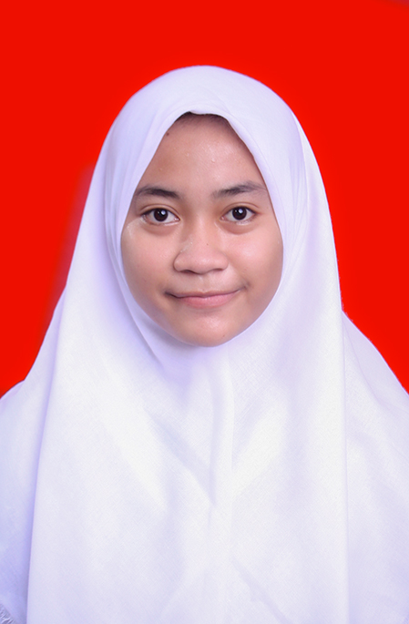

Data Diri
Imroatus Tsaany Maghfira
Nama saya Imroatus Tsaany Maghfira. Orang-orang kerap memanggil saya dengan sebutan fira, atus, dan lain sebagainya. Saya adalah mahasiswa semester 4 program studi Teknik Informatika di UIN Maulana Malik Ibrahim Malang. Saya dilahirkan di Bojonegoro pada tanggal 01 April 2002. Saya adalah putri dari 3 bersaudara. Kakak saya bernama Andi Surya Pratama dan adik saya bernama Ahmad Naafi' Rahmatullah. Kami bertiga dilahirkan dari Kedua orang tua yang sangat kami sayangi dan cintai, ayah bernama Mohammad Rohmad dan Ibu bernama Anny Insriana. Oh iya, saya berasal dari Bojonegoro, Jaawa Timur. Lebih tepatnya RT.009 RW.002 Desa Mojosari Kecamatan Kepohbaru Kabupaten Bojonegoro.